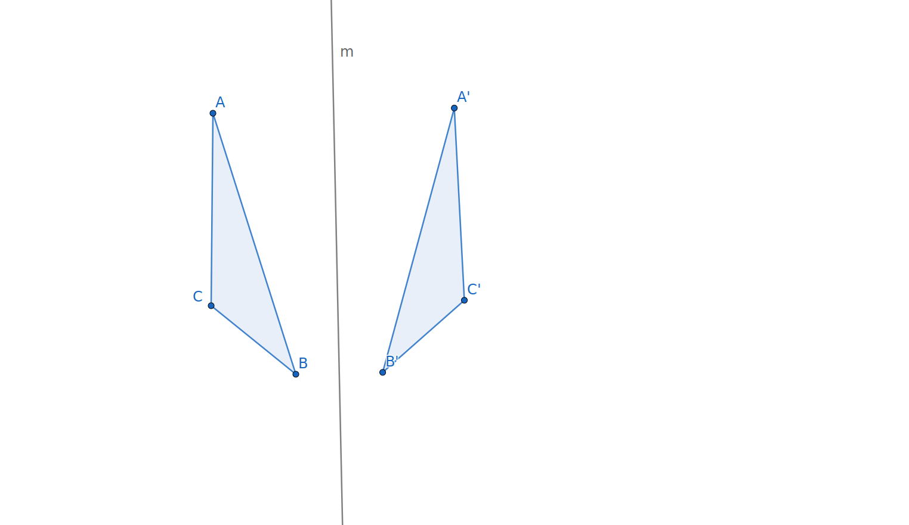
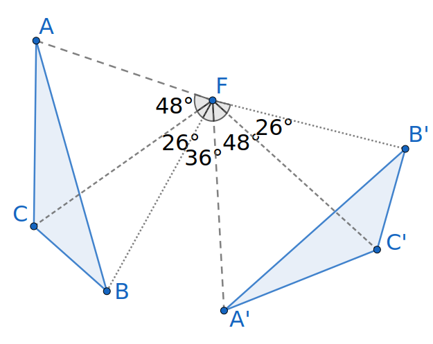

Subsection4.2.1What do we mean by orientation-preserving?
The picture shows a triangle \(\Delta ABC\) reflected across a line \(\ell\text{.}\) Although the letters \(A\text{,}\)\(B\text{,}\) and \(C\) are in alphabetical order when read clockwise from the original figure, the letters in the reflected image \(\Delta A'B'C'\) are in the reverse order. When this happens, we say that the transformation reverses orientation. Any reflection will be an orientation-reversing transformation.

Figure4.2.1.A reflection reverses orientation
Not all transformations reverse orientation. In this section, you will encounter two types of orientation-preserving transformations: rotations and translations. When either of these is performed, the order in which the vertices are read is unchanged.
Subsection4.2.2Translations
Exploration4.2.1.Translating on a Coordinate Plane.
(a)
Figure 4.2.2 gives a picture of quadrilateral \(ABCD\) a vector \(\overrightarrow{EF}\) on a coordinate grid. Vector \(\overrightarrow{EF}\) goes from \((2,4)\) to \((5,3)\) suggesting that it moves points three units to the right and one unit down.
Figure4.2.2.An interactive Geogebra applet for translating by a coordinate vector.
Use the point tool to locate and mark the image \(A'\) created by moving point \(A\) by vector \(\overrightarrow{EF}\text{.}\) What are the coordinates of \(A'\text{?}\)
Create \(B'\text{,}\)\(C'\text{,}\) and \(D'\) in a similar fashion, recording their coordinates. Then use the polygon tool to draw quadrilateral \(A'B'C'D'\text{.}\)
(b)
Does the transformation mapping \(ABCD\) to \(A'B'C'D'\) preserve distance? In other words, is the length of each side of quadrilateral \(A'B'C'D'\) equal to its corresponding side in quadrilateral \(A'B'C'D'\text{?}\)
(c)
Are the corresponding angles of \(ABCD\) and \(A'B'C'D'\) congruent?
(d)
Is the orientation of quadrilateral \(\Delta ABCD\) preserved under the translation? How do you know?
(e)
Sketch the segments \(\overline{AA'}\text{,}\)\(\overline{BB'}\text{,}\)\(\overline{CC'}\text{,}\) and \(\overline{DD'}\text{.}\)
What do you notice about the lengths of these segments?
What appears to be true about the lines \(\overleftrightarrow{AA'}\text{,}\)\(\overleftrightarrow{BB'}\text{,}\)\(\overleftrightarrow{CC'}\text{,}\) and \(\overleftrightarrow{DD'}\text{?}\)
Hint.
Since lines have infinite length, you should be looking for a property other than length.
(f)
Are the quadrilaterals \(ABCD\) and \(A'B'C'D'\) congruent?
(g)
What type of quadrilateral is \(ABIH\text{?}\) How do you know? Can the same be said of quadrilaterals \(ADKH\text{,}\)\(CDKJ\text{,}\) and \(BCJI\text{?}\)
(h)
An isometry affects all points in the plane, not just those pictured. Draw three new points: point \(L\) lying on side \(\overline{BC}\text{,}\) point \(M\) lying in the exterior of quadrilateral \(ABCD\text{,}\) and point \(N\) lying in the interior of \(\ABCD\text{.}\)
Sketch point \(L'\text{,}\) the image of \(L\) under the transformation that takes \(ABCD\) to \(A'B'C'D'\text{.}\) How is the location of \(L'\) related to \(A'B'C'D'\text{?}\)
Sketch point \(M'\text{,}\) the image of \(M\) under the transformation that takes \(ABCD\) to \(A'B'C'D'\text{.}\) How is the location of \(M'\) related to \(A'B'C'D'\text{?}\)
Sketch point \(N'\) the image of \(N\) under the transformation that takes \(ABCD\) to \(A'B'C'D'\text{.}\) How is the location of \(N'\) related to \(A'B'C'D'\text{?}\)
(i)
We call the isometry in Figure 4.2.2 a translation. Describe in your own words how a translation acts on points in the plane.
Subsubsection4.2.2.1Properties of Translations
In Exploration 4.2.1, we observed many of the properties of a transformation called a translation. Each translation is uniquely defined by a translation vector 1 which indicates the direction and distance that every point is moved by the translation. The choice of the translation vector, on the other hand, is not unique. Any vector of the same length which points in the same direction may serve as the vector for the translation. In Figure 4.2.2, the vector \(\overrightarrow{BB'}\) is a translation vector for the given translation; however, \(\overrightarrow{AA'}\text{,}\)\(\overrightarrow{CC'}\text{,}\)\(\overrightarrow{DD'}\text{,}\) or even your \(\overrightarrow{MM'}\) would describe the same translation. Any of these vectors may be chosen as the translation vector for this translation. You probably noticed that these vectors were parallel and had the same length.
In addition, we observed that the translation preserved orientation, distance, angle measure, and shape. When you chose a random point \(L\) on \(\overline{BC}\text{,}\) its image landed on \(\overline{B'C'}\text{,}\) suggesting that a translation should preserve linearity of points.
Definition4.2.3.
A transformation that preserves linearity, that takes collinear points to collinear points, is called a collineation.
Subsection4.2.3Rotations
The third transformation we will consider is a rotation. Like a translation, a rotation preserves the orientation of the vertices. Each rotation has a single point, called the center of the rotation, which is not moved by the rotation. All other points are rotated around the center a specific number of degrees. A good way to visualize a rotation is to imagine putting a pin through the center and moving the paper around that pin.
Exploration4.2.2.Exploring a Rotation.
Figure 4.2.4 shows an example of the action of a translation on triangle \(\Delta ABC\text{.}\) Use this figure to answer the following:

Figure4.2.4.A rotation of \(\Delta ABC\)
(a)
List the vertices of the original triangle in clockwise order starting with \(A\text{.}\) List the vertices of the image in clockwise order starting with \(A’\text{.}\) Does the rotation preserve the orientation of the triangle?
(b)
What point in Figure 4.2.4 is the center of this particular rotation? Is it on either triangle, in the interior of either triangle, or in the exterior of both triangles? How do you know that the point you identified as the center meets the criteria in the definition of center of rotation?
(c)
Is the rotation distance-preserving? How do you know?
(d)
In Figure 4.2.4, the following angle measures are given:
What is the degree measure of the rotational angle of this rotation? Is it a clockwise or counterclockwise rotation?
Subsubsection4.2.3.1Properties of Rotations
A rotation is specified by two pieces of information, namely its center and the angle of rotation. The center is the one point which does not move and forms the vertex for the rotation angle. The distance between the center and each point does not change under the rotation, but the direction from the center to each point is changed according to the rotation angle. Normally we think of a positive rotation moving each point \(P\) to its image \(P’\) in the counterclockwise direction. Thus, a rotational angle with negative degree measure would move the image clockwise around the center. Rotational angles may be greater than 180 degrees or negative; in fact, any number of degrees is allowed!